Hi! I'm Zaidan,
a student from Jurong West Secondary School
A self-directed learner with a passion for problem-solving, systems thinking,
and exploring how technology can be used to create meaningful solutions.
About Me
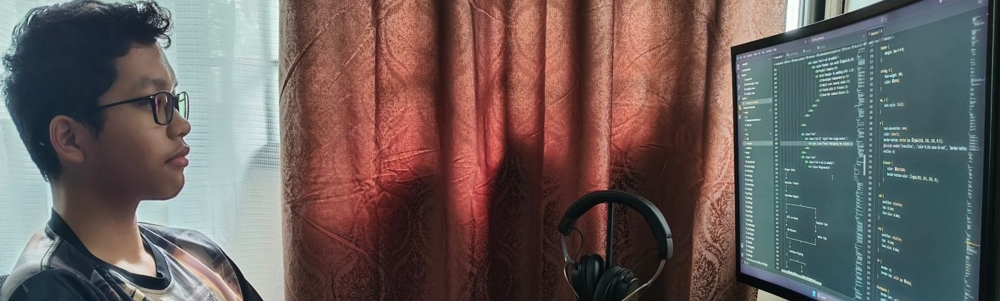
I am a Secondary 4 student from Jurong West Secondary School with a strong interest in technology and problem-solving. I enjoy understanding how systems work, identifying areas for improvement, and creating practical solutions through both school projects and personal learning.
Throughout my secondary school journey, I have actively contributed through leadership, media production, and community service. These experiences have strengthened my communication, teamwork, and organisational skills while reinforcing the importance of taking initiative and continuously learning.
How I Work
I am a systematic problem solver and systems thinker who enjoys analyzing challenges to optimize processes. I actively take initiative, lead collaboratively, and communicate effectively to achieve shared goals. As a self-directed learner, I independently pick up new skills and view challenges as opportunities to adapt, grow, and improve.
I Build to Learn
I learn best by creating projects rather than simply reading about them. Building games, experimenting with programming, and developing this portfolio have taught me to improve ideas through testing and iteration.
Systems Thinking
I enjoy breaking complex problems into smaller parts and designing systems where each component works together reliably. This mindset is reflected in both my personal projects and school work.
Collaborative Leadership
Leading parts of the Anti-Bullying Campaign and serving as a Peer Support Leader taught me that good leadership is about communicating clearly, listening to others, and helping the team succeed.
Continuous Learning
When something interests me, I enjoy exploring it independently. I continually look for opportunities to expand my skills beyond the classroom.
Experiences & Contributions
Beyond academics, I have actively contributed to my school and community through leadership, media production, and service initiatives. These experiences have strengthened my communication, teamwork, and problem-solving skills.
Anti-Bullying Campaign
I contributed end-to-end to this project. My work involved brainstorming, planning
and writing the script.
I took on a leading role
in acting and filming the scenes, before handling the video editing to refine the footage.
Finally, I delivered the presentation.
This experience strengthened my leadership and project
management skills while sharpening my communication and creativity.
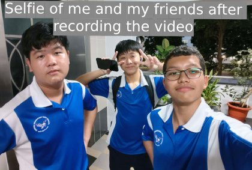
Peer Support Leader
As a Peer Support Leader, I organised bonding activities
and backed well-being initiatives.
The role involved clear communication,
boosting participation, and fostering a positive environment
with classmates.
This experience built my confidence with diverse groups,
highlighting the value of empathy.
I also learned that leadership means listening and supporting others,
not just directing activities.
INFOCOMM MEDIA TRAINING CLUB (2023–2026)
My journey in IMTC allowed me to explore different areas of media production, including photography, event coverage, filming, and video editing. Over four years, I participated in various school events and projects that required teamwork, adaptability, and technical skills.
One of the most valuable lessons I learnt was how to work under deadlines while maintaining quality. Whether capturing photographs during events or editing videos for school projects, I developed a greater appreciation for planning, attention to detail, and collaboration.
Community Service
Elderly Befriending & SCPA
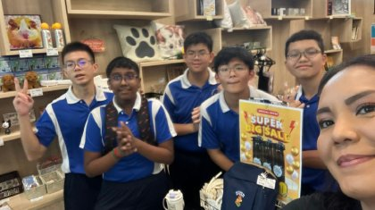
Through the elderly befriending programme, I assisted with activities and interacted with elderly participants.
These interactions taught me the importance of patience towards others. I also volunteered at the SPCA for an animal wellness programme, which helped me become more
understanding.
Masjid Assyikirin Donation Aid
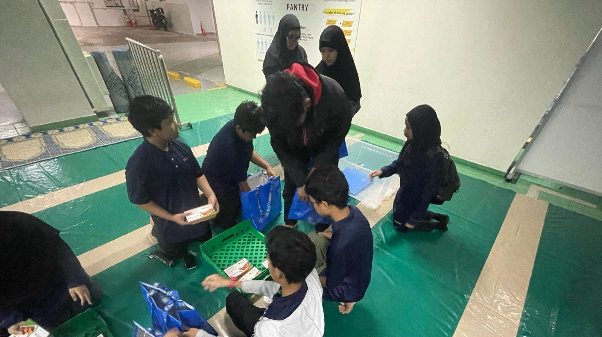
Since young, I have been involved in community initiatives through Masjid Assyikirin. I contributed to fundraising efforts, packed aid items, and helped distribute assistance to families in need. These experiences strengthened my sense of responsibility and service towards the community.
Personal Projects & Technical Exploration
Outside of school, I enjoy exploring technology through self-directed projects. I learn best by experimenting, testing ideas, and solving problems independently. While many of my projects were created using Minecraft's command system, they reflect my interest in logic, automation, and designing interactive systems.
Featured Project
Designing a Multiplayer Survival Game
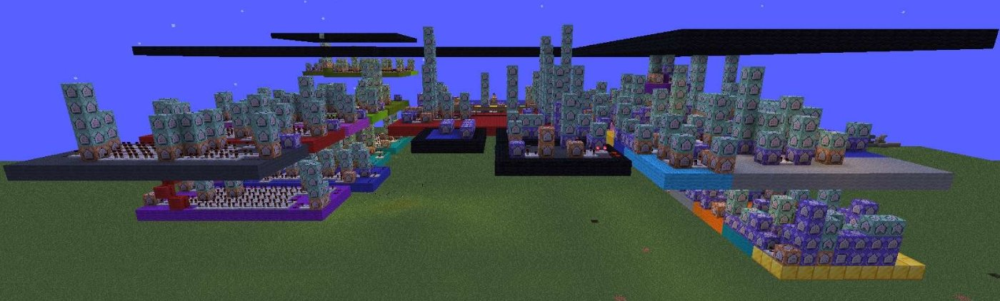
Project Overview
I designed and built a multiplayer PvP game where time acts as the player's most valuable resource. Every player starts with three hours. Eliminating opponents rewards additional time, while dying results in a penalty. Players who run out of time are permanently eliminated, creating a more strategic and intense gameplay experience.
Project Summary
- Developed independently
- Built over several weeks
- Tested with 13 friends
- Used 60+ command blocks
Designing the System
Player Joins
│
▼
Receives 3 Hours
│
▼
Countdown Begins
│
┌────────────────┴────────────────┐
│ │
▼ ▼
Kill an Enemy Complete Task
│ │
▼ ▼
+10 Minutes Bonus Time
│ │
└────────────────┬────────────────┘
│
▼
Continue Playing
│
┌────────┴────────┐
│ │
▼ ▼
Player Dies Timer Reaches 0
│ │
▼ ▼
−20 Minutes Permanent Elimination
Rather than focusing only on gameplay, I spent time designing the rules that controlled how players progressed. Every mechanic needed to interact correctly so that the game remained fair and engaging.
Solving Problems
Creating Fair Objectives
Designed random tasks that rewarded players with additional time.
Tracking Progress
Used scoreboards to monitor player progress and determine when objectives had been completed.
Playtesting
Tested the game with friends and observed how players interacted with different mechanics, allowing me to identify opportunities for improvement.
The featured project represents one of several multiplayer game systems I have designed. Other projects include story-driven adventures, ability-based gameplay and more.
Other Technical Exploration
Java
Learnt programming fundamentals through external coding classes and self-directed practice.
Scratch & Microbits
Created small interactive games while learning programming logic and event-driven design.
HTML & CSS
Built and customised this portfolio website by editing HTML and CSS, gaining practical experience with front-end web development.
Self-Directed Learning
Regularly explore programming, game design, and technology concepts through personal experimentation and online resources.
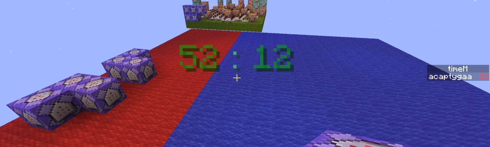
These experiences taught me that I enjoy designing systems more than simply using technology. I find satisfaction in planning how different components work together, testing ideas, and improving them through experimentation. This curiosity motivates me to continue learning and exploring new areas of software engineering.
Achievements & Growth
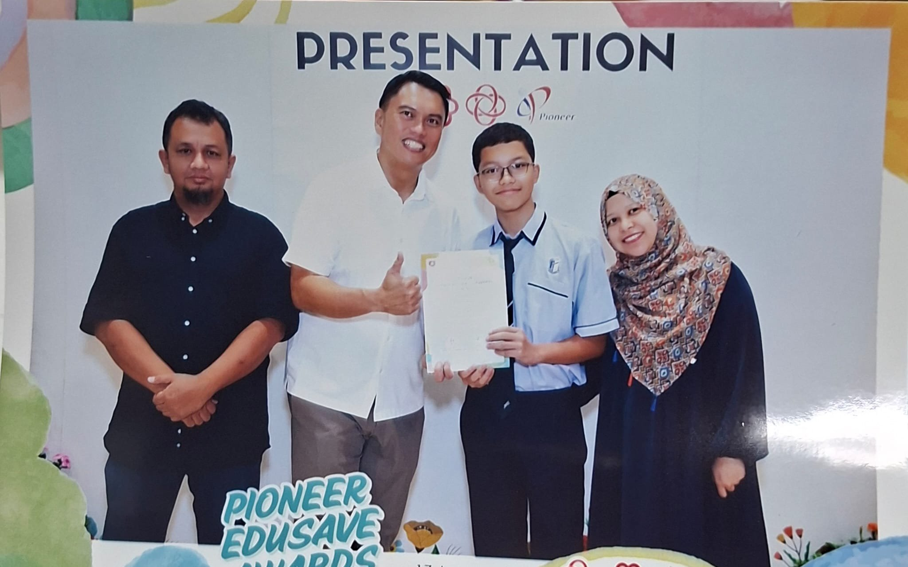
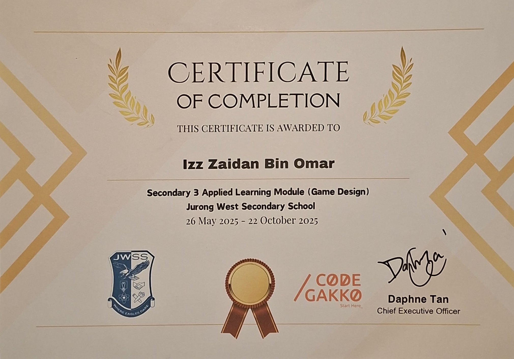
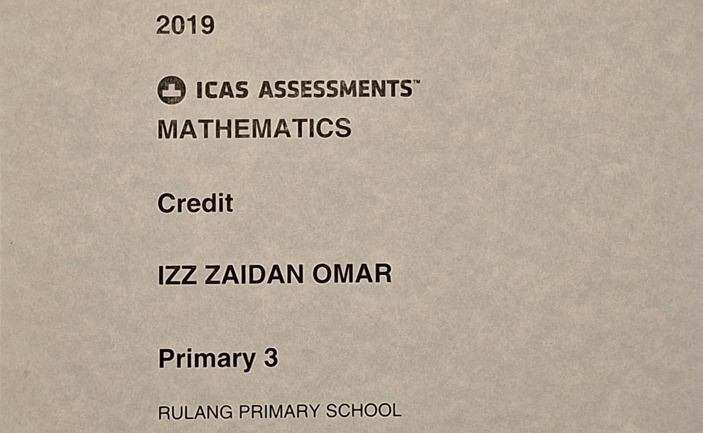
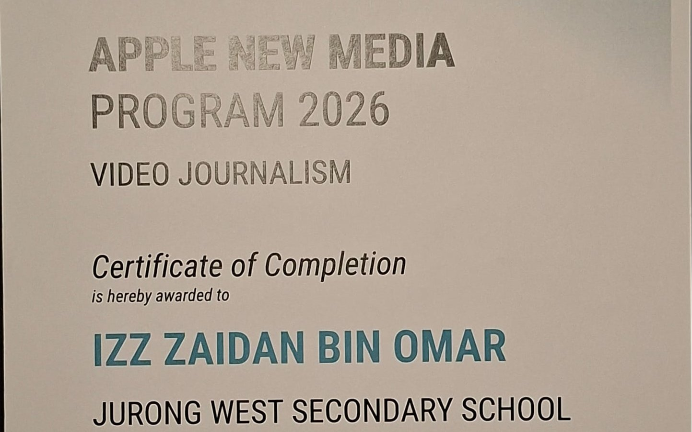
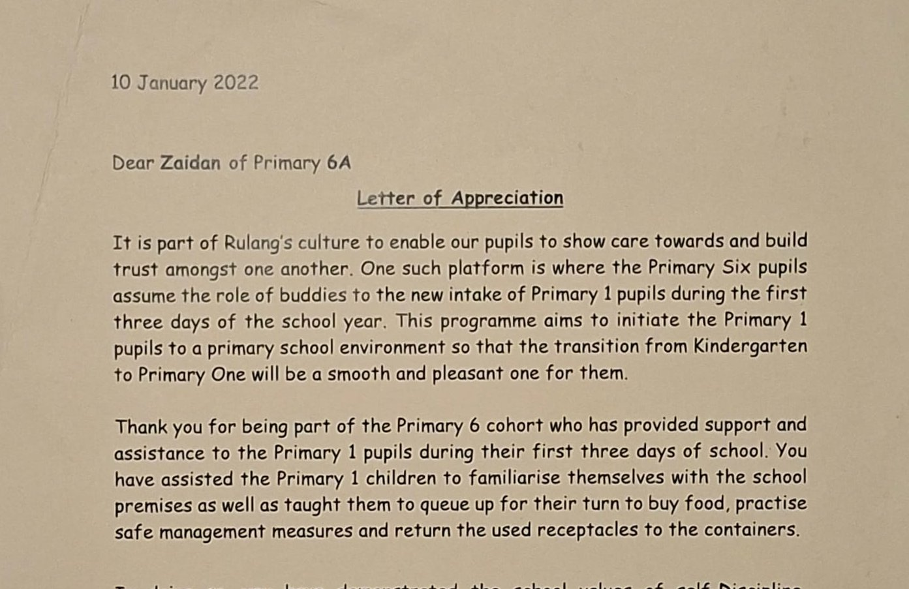
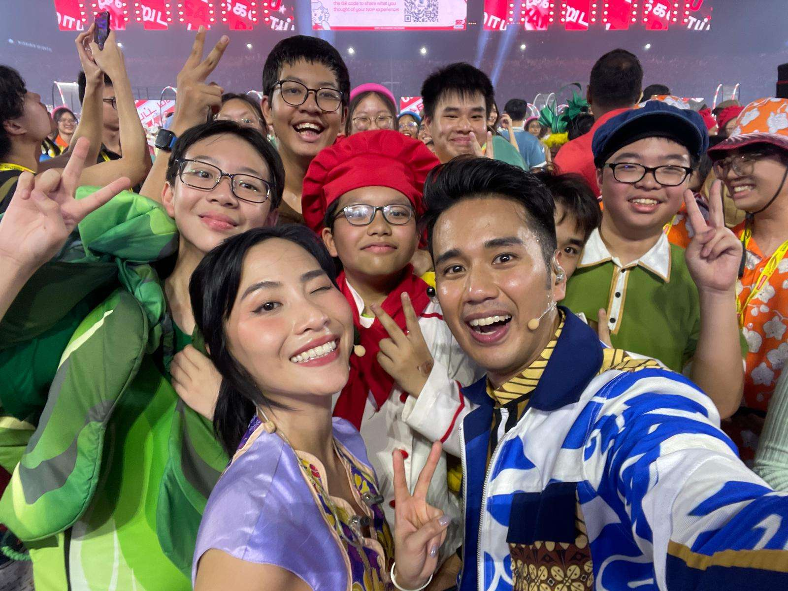
While I appreciate recognition for my efforts, I believe the most valuable part of each experience is the learning process. Every competition, project, and challenge has helped me develop new skills and a stronger mindset for continuous improvement.
Looking Ahead
My Journey
Throughout my secondary school journey, I gradually discovered that I enjoy more than simply using technology, I enjoy understanding how it works and creating solutions with it. Whether leading school projects, designing systems for personal projects, or building this portfolio website, I found myself naturally drawn to analysing problems, planning logical solutions, and continuously improving them through experimentation. These experiences helped me recognise the kind of work I genuinely enjoy.
My Career Goal
That realisation led me to develop an interest in software engineering because it combines the things I enjoy most: logical thinking, creativity, and problem-solving. I enjoy designing reliable systems, refining them through testing, and continuously learning new skills. This is the direction I hope to pursue in the future.
Why This Diploma?
I believe this diploma is the next step in my learning journey because it will strengthen the technical skills behind the interests I have already developed independently. Through practical projects and collaboration, I hope to deepen my understanding of software development and continue building meaningful solutions.
Looking Beyond Polytechnic
After completing my diploma, I plan to further my education and dive deeper into the tech industry.
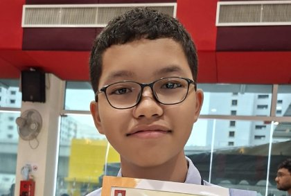
Thank you for taking the time to view my portfolio.
Izz Zaidan
Most of my experience so far has been designing systems through Minecraft's command system. Building this portfolio website was one of my first steps into web development, and it strengthened my interest in software development. I look forward to continuing my learning journey, developing my technical skills, and one day contributing as a software engineer.